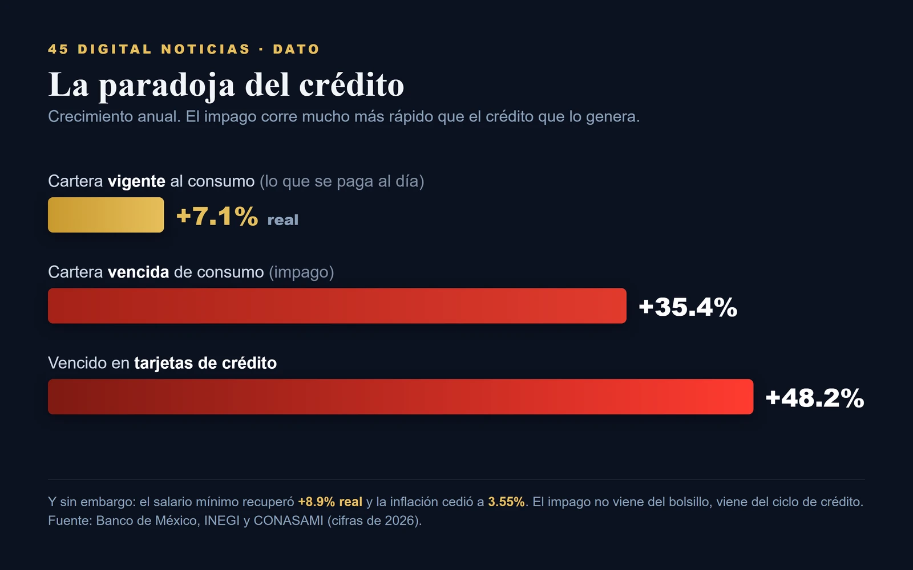

La grieta que ya se siente
Segunda parte de La tormenta perfecta. La cartera vencida del consumo marcó un récord (+35% anual, +48% en tarjetas) y la confianza del consumidor cayó a mínimos de 2022, pero el crédito todavía crece y el salario real se recuperó. El impago no viene del bolsillo, viene del ciclo de crédito (Minsky) y del freno de la inversión. La grieta ya se siente, todavía no se abre.

En la primera entrega de esta tormenta leímos el mapa desde arriba: dónde vive de verdad el riesgo, y la conclusión fue que no es monetario ni cambiario, es fiscal e institucional. Pero un mapa visto desde arriba no siente la lluvia. Falta el piso de abajo, el de los hogares, y ahí la tormenta ya no es pronóstico, ya se siente. La pregunta de esta segunda parte es incómoda y concreta: por qué la gente dejó de pagar, si por casi todos los indicadores debería estar pagando mejor.
Empecemos por el hecho, que es contundente. La cartera vencida de los créditos al consumo tocó los 61 mil 695 millones de pesos al cierre de abril de 2026, un 35.4 por ciento más que un año antes, el nivel más alto para un mes de abril del que hay registro, según cifras del Banco de México. El punto de presión son las tarjetas: su saldo vencido saltó a 24 mil 18 millones de pesos, un aumento anual de 48.2 por ciento, casi el doble del ritmo de la cartera de consumo en su conjunto. La gente no está dejando de pagar la hipoteca ni el auto primero, está dejando de pagar el plástico, que es la deuda más cara y la primera que se suelta cuando el mes no cierra.
La demanda confirma el apretón. La confianza del consumidor cayó a 43.5 puntos en mayo, su menor nivel desde diciembre de 2022, con sus cinco componentes a la baja. El consumo privado retrocedió 1.6 por ciento en enero frente al mes previo, la caída mensual más pronunciada de la serie reciente del INEGI. Las ventas de las tiendas afiliadas a la ANTAD, a unidades iguales, crecieron apenas 3.1 por ciento nominal en 2025, el menor avance desde 2014 y, contra una inflación cercana al 4 por ciento, negativo en términos reales. El bucle se cierra en el dato macro que ya conocíamos: un producto que se contrajo 0.6 por ciento en el primer trimestre.

La grieta ya se siente. Todavía no se abre.
Y aquí viene el matiz que un titular alarmista se salta y que a esta lectura la vuelve sólida: el crédito no se derrumbó, todavía crece. La cartera vigente al consumo llegó a 1.9 billones de pesos en marzo y creció 7.1 por ciento en términos reales, con todos sus segmentos en positivo. Es, de hecho, la única cartera que sostiene la expansión del sistema mientras el crédito a empresas y a vivienda se enfría. Lo que tenemos no es un colapso del crédito, es un impago récord ocurriendo dentro de un libro que sigue creciendo, mientras la banca ya empezó a cerrar la llave: en la encuesta EnBan del Banco de México, los bancos de mayor tamaño endurecieron sus criterios de aprobación en tarjetas, autos y préstamos personales, y el crédito bancario total desaceleró de más de 10 por ciento a cerca de 6, según Fitch. La fractura es por dentro. Todavía no se abre.
Falta la pregunta con la que abrimos, y su respuesta es la que reencuadra todo. Si la gente dejó de pagar, ¿fue porque se empobreció? Los datos dicen que no. El salario mínimo recuperó cerca de 8.9 por ciento de poder adquisitivo real respecto a un año antes, y la inflación, lejos de dispararse, cedió a 3.55 por ciento anual en la primera quincena de junio. El impago no viene del salario ni de la inflación, que mejoraron. Viene del ciclo de crédito, de la cuenta de varios años de expansión acelerada que ahora se cobra, eso que Hyman Minsky describió como la fragilidad que se acumula en los buenos tiempos y se revela apenas cambia el viento. Un país puede tener el salario recuperándose y a la vez a sus hogares tronando bajo el peso de una deuda cara que contrataron cuando el crédito era fácil.
Y viene, sobre todo, de una economía que se frena por el lado de la inversión y el empleo, no del bolsillo. Los analistas que cita el INEGI atribuyen el desplome de la confianza a un mercado laboral que se enfría y a remesas que se desaceleran, no a una carestía galopante. Es la misma historia de la primera entrega, vista desde abajo: el capital que no se compromete por la incertidumbre jurídica y comercial no solo mueve indicadores fiscales, también deja de crear los empleos que le permitirían a un hogar pagar su tarjeta. La grieta del consumo y la falla institucional no son dos tormentas, son la misma, sentida a dos alturas distintas.
Conviene, entonces, saber qué vigilar en este piso. La grieta se volvería un desplome de consumo si el salario real gira a la baja, si la cartera vigente deja de crecer o si el empleo formal se desploma. Hasta que eso pase, lo que hay es una advertencia temprana, de esas que se leen en la cartera vencida antes que en los discursos: los hogares ya están recortando, ya están priorizando qué deuda pagan, ya perdieron la confianza. No es todavía una crisis de los hogares. Es el ruido que hace una casa cuando el terreno empieza a ceder. La grieta ya se siente. Todavía no se abre.
SRVO
Fuentes y referencias citadas
- Cartera vencida de consumo récord (61,695 mdp, +35.4%) y tarjetas (24,018 mdp, +48.2%): La Jornada, 13 de junio de 2026
- Cartera vigente al consumo (+7.1% real, marzo 2026): Banxico, Agregados Monetarios y Actividad Financiera, marzo 2026
- Banca endurece criterios (Encuesta EnBan) y desaceleración del crédito a ~6% (Fitch): Revista Fortuna, 8 de mayo de 2026; El CEO / Fitch
- Confianza del consumidor 43.5 puntos (mayo 2026, mínimo desde dic-2022): El Imparcial / INEGI, 5 de junio de 2026
- Consumo privado −1.6% mensual (enero 2026): INEGI, Boletín IMCP 210/26
- Ventas ANTAD a tiendas iguales +3.1% en 2025 (el menor desde 2014): Informa BTL / ANTAD
- PIB −0.6% en el primer trimestre de 2026 (cifra final): El Financiero, 22 de mayo de 2026
- Salario mínimo 2026 y recuperación de ~8.9% real: CONASAMI, gob.mx
- Inflación general 3.55% anual (1ª quincena de junio 2026): INEGI, Boletín INPC 277/26
- Hyman Minsky, hipótesis de la inestabilidad financiera (Stabilizing an Unstable Economy, Yale University Press, 1986).